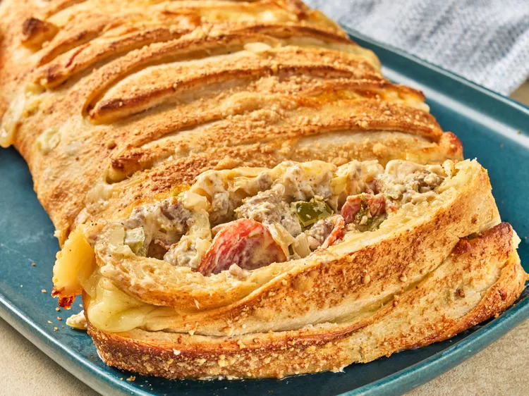

Home
Colorado Pizza Bread

This Colorado pizza bread, with a sausage and pepperoni filling laced with
2 kinds of cheese, is quickly made with refrigerated pizza dough. It's a
beautiful appetizer, and hearty enough for dinner.
Ingredients
- 1 pound ground Italian sausage
- 1 cup chopped yellow onion
- 1 green bell pepper, chopped
- 2 (6 ounce) bags sliced pepperoni
- 1 teaspoon onion powder
- 1 teaspoon garlic powder, plus more for sprinkling
- 1/2 teaspoon salt
- 1/2 teaspoon ground black pepper
- 1 1/2 (8 ounce) packages cream cheese, cut into chunks
- 2 ounces sliced black olives
-
1 (13.8 ounce) package refrigerated pizza dough, such as Pillsbury™
- 1 cup shredded creamy mozzarella cheese
- 1 cup shredded Colby Jack shredded
- 4 tablespoons butter, melted
- 1 tablespoon grated Parmesan cheese
Directions
- Preheat the oven to 400 degrees F (200 degrees C).
-
In a large skillet over medium-high heat; cook and stir Italian sausage
until browned, about 5 minutes. Drain excess grease.
-
Reduce heat to medium, add onions, bell pepper, and pepperoni to the
skillet and cook until onion and bell pepper begin to soften, about 3
minutes. Stir in onion powder, 1 teaspoon garlic powder, salt, and
pepper. Add cream cheese and stir constantly until well combined. Stir
in black olives and remove from heat.
-
Line a baking sheet with parchment paper. Unroll pizza dough onto the
baking sheet. Press and stretch dough into a 10x15-inch rectangle.
-
Sprinkle 1/2 of the mozzarella cheese and 1/2 of the Colby Jack cheese
down the middle of the pizza dough lengthwise, followed by meat mixture.
Top meat mixture with remaining mozzarella and Colby Jack cheese.
-
Make 2-inch cuts into the dough from both long edges toward the meat
mixture in the center, about 1 inch apart. Starting at the top, stretch
each strip across in a crisscross pattern to form a loaf.
-
Brush the loaf with melted butter. Sprinkle with garlic powder and
grated Parmesan cheese.
-
Bake in the preheated oven until the top begins to turn golden brown, 15
to 20 minutes.
- Cool for 10 minutes before serving. Serve with marinara sauce.